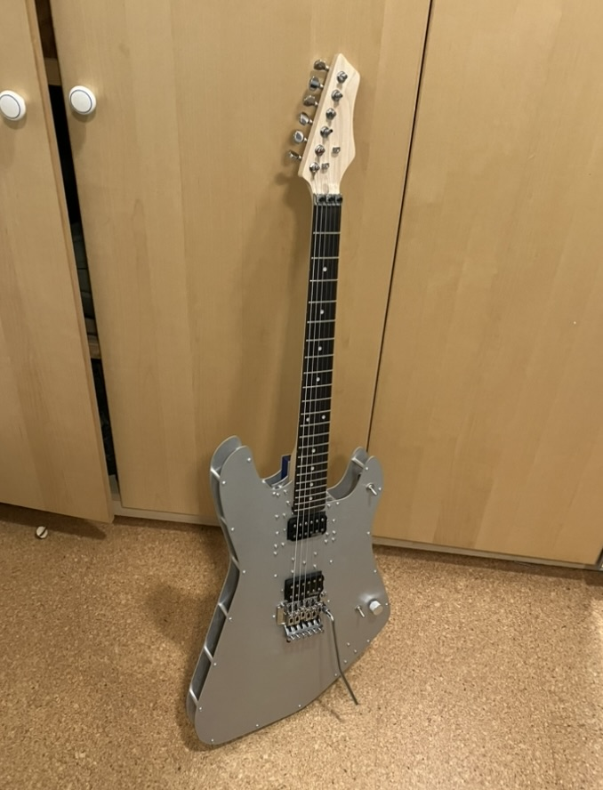
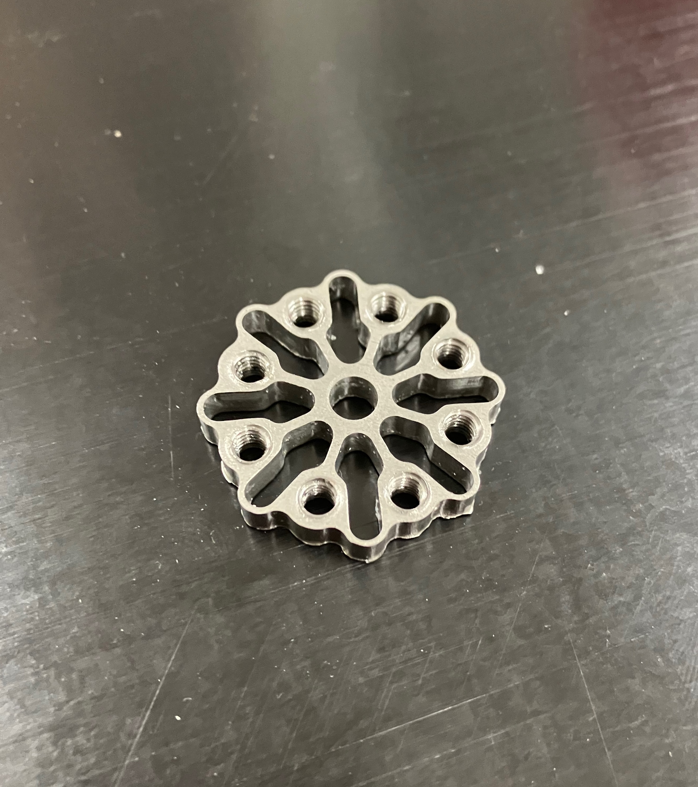

GPS Holder
A few years ago, I had the opportunity to design and prototype two 3D printed parts for a ship captain who needed to find a way to hold his GPS device onto the rail of a ship.
Electric Guitar
A few months ago, I started working on building an electric guitar. I designed this guitar to combine the shapes of the Gibson Explorer and Fender Stratocaster designs. After prototyping in cardboard to ensure the design was ergonomic, I traced the design into Autodesk Inventor. For the body design, I decided to use 3 laser-cut aluminum plates. The electronics and the neck mounting plate are attached solely to the front plate, which makes repair easier.

Genetic Programming
In this project I built a system for performing genetic programming on tree-based expressions. Using this system, I built a tool that does symbolic regression; finding a methematical model for a given dataset.
FTC Robotics
For 4 years I have helped design and build robots for my schools FTC robotics team.Rover
Inspired by the Curiosity and Perseverance mars rovers, I decided to create a robot with a similar rocker-bogie suspension system. My favorite part of this rover to build was the wheels, which were inspired by NASA's airless tire designs. They are airless tires which use a helical coil of steel cable to provide grip. In my testing, they work pretty well on dirt, grass, and rock.
Fusor
Met twice a week with team members to work on completing Eastside Preparatory School's long-running project to build a working nuclear fusion reactor. Worked to improve and maintain the fusor's high voltage system, including designing and implementing a current measurement device in order to better understand the current draw from the fusion chamber.Compliant Mechanisms
I designed and manufactured several compliant shock absorbers. These were designed for use by my FTC robotics team to absorb shock loads from servos. I machined the final parts out of delrin and stainless steel.
